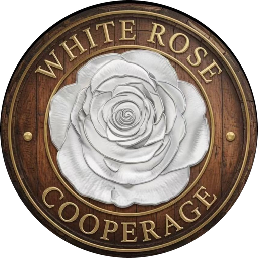

Cask Sourcing
Premium oak casks from our global network of partner cooperages — from ex-bourbon barrels to tea-seasoned casks. No minimum order quantity.
Explore cask sourcingWe supply oak casks to distilleries of every size, release rare spirits under our own label, and help collectors acquire exceptional casks.

From a single experimental barrel to full container loads, from one bottle to a private cask.
Premium oak casks from our global network of partner cooperages — from ex-bourbon barrels to tea-seasoned casks. No minimum order quantity.
Explore cask sourcingRare, carefully selected spirits released under the White Rose Cooperage label, plus bottling collaborations for distilleries, brands and collectors.
Discover our releasesPrivate allocations of exceptional-provenance casks, stored in bond — to hold for the long term or bottle under your own label.
About private allocationsOrder a single 40L experimental barrel or full container loads — we scale to your production.
Beyond American and European oak: Mizunara hybrids, STR casks and Pu-erh tea-seasoned finishes.
Teams in two hubs serving Asia and Europe, with logistics coordinated worldwide.
Wood species, toast and char, cask size — and why no minimum order matters for micro-batches.
Read the guideRe-charring, Pu-erh tea seasoning and positioning limited releases.
Read the guideCask specifications, wholesale orders, bottling collaborations or private cask allocations — email our Hong Kong and London team.
Contact us